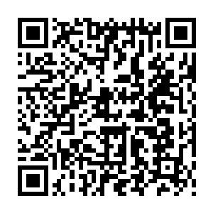

📷 Juega la misión en tu teléfonoEl universo es todo lo que existe: el espacio y todos los astros que hay en él. Es tan enorme que no conocemos sus límites. Los astros son los cuerpos del espacio, como las estrellas, los planetas y las lunas.
✅ El Sol (estrella), la Tierra (planeta) y la Luna (satélite) son astros distintos.
El Sistema Solar está formado por el Sol y todos los astros que giran a su alrededor: ocho planetas, sus satélites y otros cuerpos como asteroides y cometas. El Sol está en el centro.
| Astro | ¿Qué es? |
|---|---|
| 🌍 La Tierra | El tercer planeta desde el Sol. El único con vida conocida: tiene agua y aire. |
| 🌙 La Luna | El satélite natural de la Tierra. No tiene luz propia: refleja la del Sol. |
La Luna cambia de aspecto según cómo la ilumina el Sol. Son sus fases, en orden:
La Tierra hace dos movimientos importantes:
| Error | Por qué está mal | Lo correcto |
|---|---|---|
| Creer que los planetas tienen luz propia | Solo las estrellas tienen luz propia. | Luz propia = estrellas ✔ |
| Pensar que la Luna es un planeta | La Luna es un satélite de la Tierra. | Luna = satélite ✔ |
| Decir que la rotación produce las estaciones | La rotación produce el día y la noche. | Estaciones = traslación ✔ |
| Creer que el Sol gira alrededor de la Tierra | Es la Tierra la que gira alrededor del Sol. | La Tierra gira ✔ |
| Pensar que la Luna tiene luz propia | La Luna refleja la luz del Sol. | La Luna refleja ✔ |
| Columna A | Columna B |
|---|---|
| 1. ____ Universo | A. Giro de la Tierra alrededor del Sol (un año) |
| 2. ____ Estrella | B. Astro que tiene luz propia |
| 3. ____ Planeta | C. El satélite de la Tierra |
| 4. ____ Satélite | D. Todo lo que existe: el espacio y los astros |
| 5. ____ El Sol | E. Enorme grupo de estrellas |
| 6. ____ La Luna | F. Gira alrededor de una estrella; sin luz propia |
| 7. ____ Galaxia | G. La estrella del sistema solar |
| 8. ____ Rotación | H. Giro de la Tierra sobre sí misma (día y noche) |
| 9. ____ Traslación | I. Gira alrededor de un planeta |
| 10. ____ Sistema Solar | J. El Sol y los astros que giran a su alrededor |
| Actividad | Lugar | Valor | Nota obtenida | Observación |
|---|---|---|---|---|
| Copió los contenidos de este material en su cuaderno de Ciencias Naturales. | Tarea en el hogar | 100 | ||
| Resolvió la sección «Ponte a Prueba» directamente en esta ficha. | Tarea en el aula, un día antes del examen | 100 | ||
| Dibujó y rotuló el Sistema Solar con sus planetas en su cuaderno. | Tarea en el aula | 100 | ||
| Prueba impresa realizada en el aula. | Evaluación en el aula | 100 | ||
| Promedio nota final → | % | |||
Recuerde que ya aprendió a sacar el promedio: sume el total del valor obtenido y divídalo entre cuatro. El resultado será su nota final. Perderá puntos si no completa el trabajo, si su letra no es legible o si escribe con faltas de ortografía.
Esta hoja se imprime suelta: es solo para el docente o para la autoevaluación guiada.